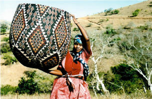

Cultuur in Afrika
Deze rijke en diverse cultuur varieert van land tot land...
In de Afrikaanse cultuur staat het 'zelf' niet los van de wereld, maar is het verenigd en vermengd met de natuurlijke en sociale omgeving. Het is door relaties met de gemeenschap en de omgeving dat een individu een wilspersoon wordt, wiens acties en beslissingen de hele groep beïnvloeden in plaats van alleen zichzelf. Er is een Xhosa-spreekwoord dat in alle Afrikaanse culturen en talen voorkomt: 'Umuntu ngumuntu ngabantu' ('Een persoon is een persoon door personen'). De rijke en diverse Afrikaanse cultuur varieert niet alleen van land tot land, maar ook binnen elk land. De cultuur van elke etnische groep concentreert zich op het gezin en is terug te vinden in de kunst, muziek en mondelinge literatuur van elke groep. In heel Afrika spreken de mensen een verscheidenheid aan talen, beoefenen ze talloze religies en wonen ze in verschillende soorten woningen. De overgrote meerderheid van de mensen in Afrika is inheems; mensen van over de hele wereld zijn echter al honderden jaren naar Afrika gemigreerd. Arabieren begonnen in de 7e eeuw na Christus vanuit het Midden-Oosten Noord-Afrika binnen te dringen en brachten de religie van de islam met zich mee. Europeanen begonnen zich halverwege de 17e eeuw in het zuidelijke deel van het continent te vestigen, net als Zuid-Aziaten, die zich vestigden in de gebieden Oeganda, Kenia, Tanzania en Zuid-Afrika. Door de eeuwen heen is de Afrikaanse cultuur verweven met culturen van over de hele wereld, hoewel veel van de traditionele Afrikaanse gebruiken overal zijn gebleven.
Afrikaanse kunst
Afrikaanse kunst en ambacht omvatten beeldhouwkunst, weven, kralen maken, schilderen, aardewerk, sieraden, hoofddeksels en kleding. Kunst uit bepaalde regio's heeft verschillende kenmerken, afhankelijk van overtuigingen, waarden en gewoonten, maar gemeenschappelijke thema's in de kunst zijn onder meer vrouwen, koppels, kinderen, dieren, mannen met een wapen of een combinatie hiervan. Maskers zijn meestal een weergave van religieuze en spirituele overtuigingen. Ze worden gebruikt voor traditionele ceremonies om goden of voorouders te eren.
kleding
Het soort kleding dat in heel Afrika wordt gedragen, varieert van noord tot zuid, en afhankelijk van religieuze overtuigingen en traditionele gebruiken. Sommige culturen dragen kleurrijke kleding, terwijl andere minder kleur dragen, maar glanzende draden in hun kleding bevatten met minimale sieraden.
Enkele interessante Afrikaanse culturen
- Mannen van de Latuka-stam in Soedan beoefenen nog steeds de traditie van het ontvoeren van een vrouw met wie ze willen trouwen. Nadat een Latuka-man zijn aanstaande bruid heeft meegenomen, gaat hij terug naar de vader van de vrouw om zijn zegen te vragen.
- Om hun huid tegen de zon te beschermen, bedekken de Himba-bevolking in het noorden van Namibië zichzelf met een mengsel van rode aarde en melkvet, waardoor het lijkt alsof ze een roodachtige huid hebben. Het otjize-mengsel wordt beschouwd als een schoonheidscosmetisch middel. Ook gebruiken ze houtas om het haar te reinigen, omdat water schaars is.
- De Algerijnse mannen van de Ahaggaren Toeareg-groep dragen bijna altijd een sluier en doen deze af en toe af als ze in een familiegroep zijn of op reis zijn.